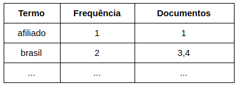

Uma introdução ao Elasticsearch.


- Velocidade de resposta.
- Relevância do conteúdo.
- suporte a thread-pool, queues, cluster, monitoramento;
- Ser uma aplicação distribuída, altamente escalável de forma horizontal;
- Alta disponibilidade;
- Schema-less (não exige declaração do esquema a ser utilizado).
- disponibiliza uma api restFul.
- Netflix
- Dell
- Airbus
- Blizzard
- Índices: são os banco de dados.
- Tipos: a tabela do banco, (Descontinuado, para versões mais novas é permitido apenas um tipo por índice, ou seja, não é mais o conceito de banco e tabelas).
- Documentos: registros do banco de dados
- Campos: colunas
{
"name": "0298386-CAPA ALMOF BORDA ANITA 40CM",
"code": "0298386",
"tags": [
{
"value": [
"DECORACAO"
],
"key": "default"
}
],
"purchase_cost": 0,
"category": "DECORACAO"
}
- Cluster: conjunto de nós, é o topo da hierarquia
- Nós: entidades que armazenam os dados (normalmente cada nó é um computador, mas isso não é sempre verdade)
- Shard: particionamento do dado dentro do nó (é também uma instância do Lucene).
- Réplica Shard: Uma réplica exata de um shard primário armazenada em outro nó.
P* = Shards primário
R* = Replica dos Shards
- Cluster API: operações a nível de cluster, como obter status dos nós.
- Index API: responsável por manipular os índices, como salvar dados versionados.
- Get API: permite buscar utilizando o método HTTP GET.
- Bulk API: realizar operações para múltiplos índices e dados em um único request.
SELECT * FROM artigo WHERE titulo LIKE ‘%Brasil%’ OR texto LIKE ‘%Brasil%’;


- Standard Analyzer
- Simple Analyzer
- Whitespace Analyzer
- Stop Analyzer
- Keyword Analyzer
- Pattern Analyzer
- Language Analyzers
- Fingerprint Analyzer
- Custom Analyzer

- Possui uma flexibilidade incrível.
- É uma excelente opção para se trabalhar com busca de dados.
- Tem o poder de executar consultas de maneira rápida e com excelente relevância dos resultados.
- A comunidade é participativa
- Possui uma excelente documentação.